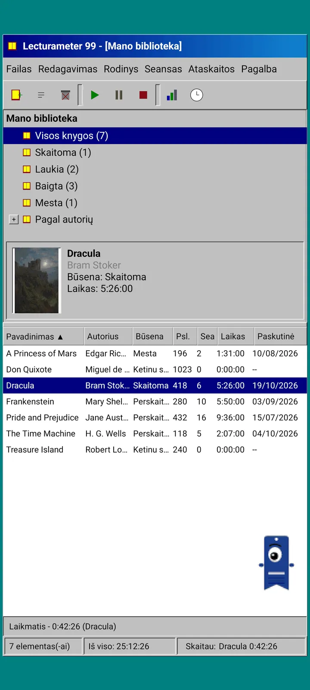
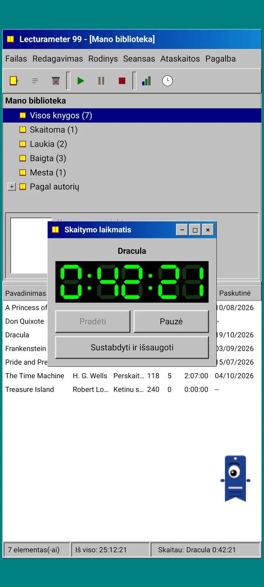
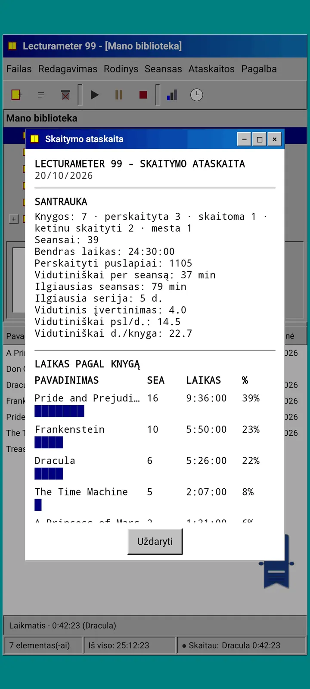
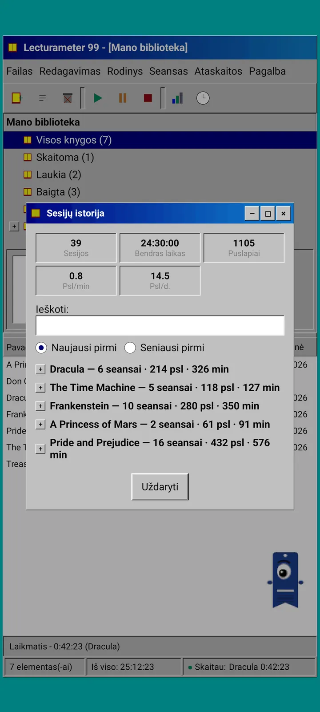
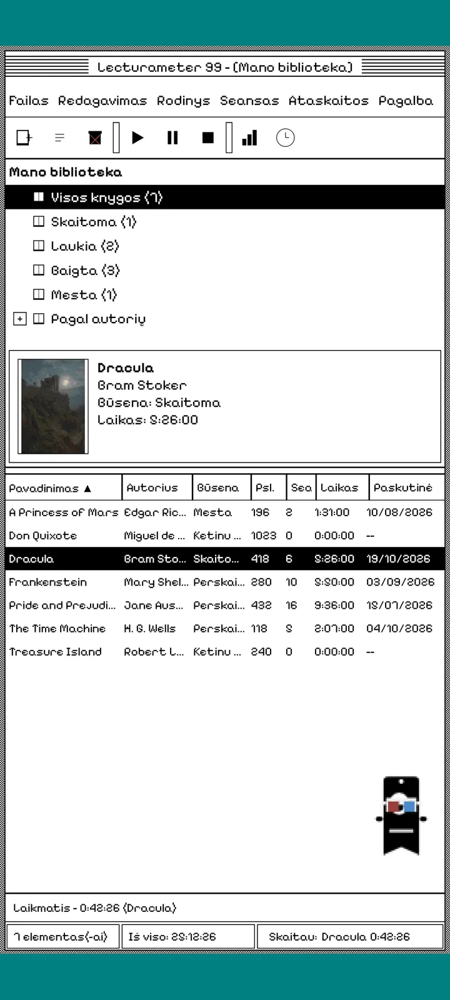
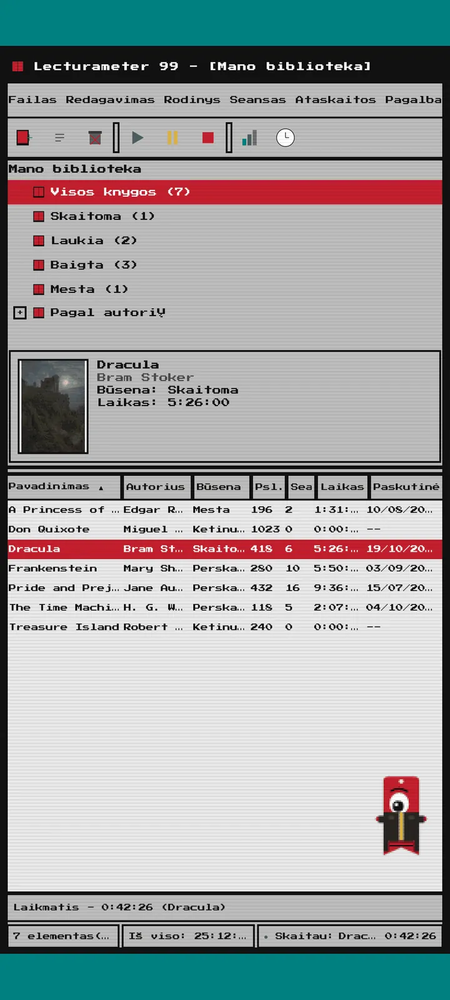
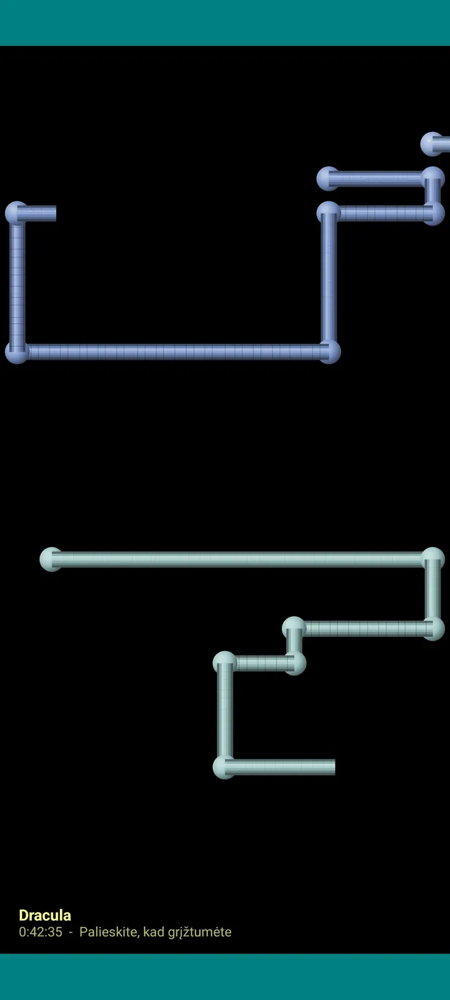

Lecturameter 1999
Lecturameter tarsi įdiegta iš kompaktinio disko 1999 metais. Alternatyvus programėlės klientas su langais, meniu ir lentelėmis, kuris atidaro tavo tikras atsargines kopijas.

Kas tai
Dešimtojo dešimtmečio pabaigos kompiuterio programa tavo telefone. Vienas langas ant žalsvai mėlyno darbalaukio, meniu juosta, įrankių juosta, aplankų medis, tanki lentelė ir būsenos juosta.
- Bibliotekos medis: visos knygos, skaitomos, laukiančios, baigtos, apleistos ir pagal autorių
- Lentelė su pavadinimu, autoriumi, būsena, puslapiais, sesijomis, laiku ir paskutiniu skaitymu. Bakstelėk stulpelio antraštę, kad surikiuotum
- Tikra knygų paieška tame pačiame kataloge, kurį naudoja Lecturameter
- Importuoja ir eksportuoja Lecturameter atsarginę kopiją bei Goodreads CSV. Tavo duomenys įkeliami ir iškeliami nieko neprarandant

Kodėl ji sukurta
Eksperimentas: perkurti Lecturameter idėją nuo nulio pagal visiškai kitokius dizaino principus, neliečiant tikrosios programėlės. Iš visų interpretacijų 1999-ųjų man patiko labiausiai, tad baigiau ją kaip smagų pratimą ir pavertiau pilnaverčiu klientu. Ji tyčia paprastesnė už Lecturameter: tai eksperimentas ir, iš principo, toliau nebus kuriama.
- Laikmatis slankiajame lange su žaliu LCD ekranu. Jį galima perkelti, sumažinti į užduočių juostą, o skaičiavimas tęsiasi būsenos juostoje
- Sustabdžius, sesijos išsaugojimo langas paklausia puslapių ir apskaičiuoja tavo tempą, kaip ir Lecturameter
- Išsaugotos sesijos yra Lecturameter sesijos: jos grįžta į modernią programėlę, jei eksportuoji Lecturameter 1999 atsarginę kopiją ir ją importuoji į Lecturameter.

Skaitymo ataskaita
Statistika – tai atspausdinta ataskaita: santrauka, laikas kiekvienai knygai su blokų juostomis, greitis puslapiais per dieną, metų kalendorius, nupieštas simboliais, ir paskutinės septynios dienos.

Sesijų istorija
Sesijos, sugrupuotos pagal knygas medyje su pliusais ir minusais, o viršuje penki skaičiai: sesijos, bendras laikas, puslapiai, puslapiai per minutę ir puslapiai per dieną.

Išsaugoti sesiją
Data, minutės, pirmas ir paskutinis puslapis, komentaras. Santrauka apskaičiuoja puslapius ir tempą, kol rašai. Jei pasieki paskutinį puslapį, paklausia, ar baigei knygą.

Pagi 99
Pagi taip pat keliauja į 1999-uosius: pikselinis ir laisvai vaikštantis po ekraną kaip to meto biuro asistentai. Jį galima tempti, bakstelėtas jis ką nors pasako, o patarimus rodo geltonuose debesėliuose.
Temos
„Klasikinė 98“ yra nemokama ir numatytoji. Paketas prideda dar šešias, kiekviena su savo fonu ir savo garsais.

Pasirink ją meniu „Rodymas“
Rodymas, Tema... atidaro langą su septyniomis temomis. Pakeitimas iš karto pasiekia visus langus, laikmatį ir Pagi.
- „Klasikinė 98“, nemokama ir numatytoji: pilki langai, tamsiai mėlynos pavadinimo juostos ir žalsvai mėlynas darbalaukis
- Temų paketas: 1984, „Guminukas“, „Atmintis“, „Bokštai“, „Branduolys“ ir „8 bitai“
- Kiekviena tema turi savo darbalaukio foną ir savo garsus bakstelėjimams, langams ir laikmačiui
- Rodymas, Temos garsai juos išjungia, jei skaitai tyloje

Klasikinė 98
Pilki langai, tamsiai mėlynos pavadinimo juostos ir žalsvai mėlynas darbalaukis. Nemokama, su ja programėlė atsidaro.

1984
Vieno bito juodai baltas darbalaukis su taškų raštais ir kampuotais langais.

Guminukas
Permatomas spalvotas plastikas, apvalūs mygtukai ir dryžiai fone.

Atmintis
Dešimtojo dešimtmečio diskų konsolės meniu tamsiai mėlynais atspalviais.

Bokštai
Dar viena dešimtojo dešimtmečio diskų konsolė: naktinė mėlyna su šviesiai mėlynomis linijomis.

Branduolys
Juoda ir žalia konsolė, tarsi niekada neišsijungiantis ekranas.

8 bitai
Stambūs pikseliai, mažai spalvų ir kampuotos raidės.

Išbandyk prieš mokėdamas
Bakstelėk užrakintą temą ir visa programėlė persijungs į ją. Jei uždarysi nepirkęs, grįš ankstesnė tema.
Ekrano užsklandos
Jos pasirodo tik veikiant laikmačiui, kai telefono neliečiate. Laukia 1, 3 ar 5 minutes arba niekada. Vienas bakstelėjimas tave grąžina, o laikmatis toliau skaičiuoja.

Skraidančios knygos
Pikselinės knygos, plasnojančios viršeliais per juodą ekraną.

Raidžių laukas
Įvairių abėcėlių raidės, praskriejančios pro šalį tarsi žvaigždžių laukas.

Puslapių vamzdžiai
Iš puslapių sudaryti vamzdžiai, kurie piešiasi, kol užpildo visą ekraną.

Šokinėjantis Pagi
Pagi, atšokantis nuo ekrano kraštų.

Skaitymo laikrodis
Sesijos laikas dideliais LCD skaitmenimis.

Kostiumai Pagi
Aštuoni kostiumai Pagi 99. Juos pasirenki per Rodymas, Pagi kostiumas..., ir gali pasimatuoti prieš mokėdamas.
- Kasečių grotuvas
- Atbula kepuraitė
- 3D akiniai
- Neoniniai akiniai nuo saulės
- Diskelis rankoje
- Odinė striukė
- Kišeninis augintinis
- Kartoninė karūna
Parduotuvė
Programėlė nemokama ir pilnai tinka skaitymui registruoti. Tai, ką gali nusipirkti, keičia tik jos išvaizdą.
Visa programėlė, be jokio laiko apribojimo.
- Biblioteka, paieška, laikmatis ir sesijos
- Skaitymo ataskaita ir sesijų istorija
- Lecturameter atsarginė kopija ir Goodreads CSV – importas ir eksportas
- Tema „Klasikinė 98“ ir Pagi 99
- Be paskyros ir be reklamų
Vienkartiniai mokėjimai, jokių prenumeratų.
- Temų paketas, €3.49: 6 temos su fonu ir garsais, taip pat ekrano užsklandos
- Ekrano užsklandos, €1.99: 5 ekrano užsklandos
- Pagi kostiumai, €1.99: 8 kostiumai
- Visas 1999, €4.49: temos, ekrano užsklandos ir kostiumai
Pasirenkami arbatpinigiai meniu „Pagalba“, jei nori nupirkti man kavos.
Temas ir kostiumus galima išbandyti gyvai prieš mokant. Jei uždarysi nepirkęs, grįš tai, ką turėjai.
Kuo skiriasi nuo Lecturameter
Taip pat kaip Lecturameter
- Tie patys duomenys: knygos, sesijos, būsenos, įvertinimai ir pastabos. Atsarginės kopijos failas abiejose programėlėse tas pats.
- Knygų paieška pagal pavadinimą ar autorių.
- Tikras laikmatis: skaičiuoja fone ir net uždarius programėlę.
- Be paskyros, be reklamų, be ryšio, išskyrus knygų paiešką.
- Tos pačios kalbos kaip Lecturameter.
Tik 1999 leidime
- 1999 metų kompiuterio sąsaja. Jokio Material.
- Tikri langai: juos tempi, sumažini ir uždarai kryželiu.
- Tekstinė skaitymo ataskaita su simboliais nupieštu kalendoriumi.
- Kontekstinis meniu ilgai paspaudus ir sparčiųjų klavišų deriniai, jei prijungi klaviatūrą.
- Pikselinis Pagi 99 su patarimų debesėliais.
- Pasirenkamos temos su savo fonu ir garsais, ekrano užsklandos veikiant laikmačiui ir kostiumai Pagi.
Ko joje tyčia nėra
- Jokio Pro ir jokios prenumeratos. Skaitymo registravimas visiškai nemokamas, parduotuvėje parduodama tik išvaizda.
- Jokių iššūkių, bingo, metų Wrapped ar valdiklių.
- Jokios įtraukiančios sesijos, aplinkos garsų ar atsarginės kopijos Google Drive. Atsarginė kopija išsaugoma kaip failas.
Uždaras testavimas
Lecturameter 1999 yra uždarame testavime Google Play. iOS versija pasirodys vėliau, datos dar nėra.
- Prisijunk prie grupės groups.google.com/g/lecturameter-1999
- Užsiregistruok kaip testuotojas adresu play.google.com/apps/testing/com.lecturameter.r1999
- Įdiek ją iš Google Play
Uždarame testavime Google Play, iOS – vėliau. Perskaityk tinklaraščio įrašą , kad sužinotum, iš kur ji atsirado ir ko tikėtis.